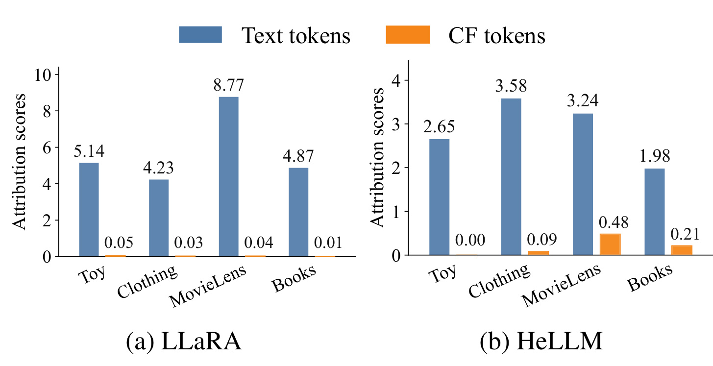
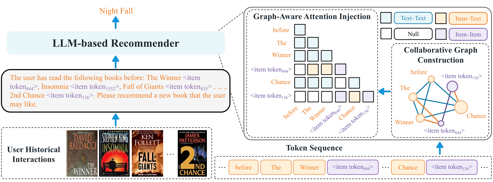
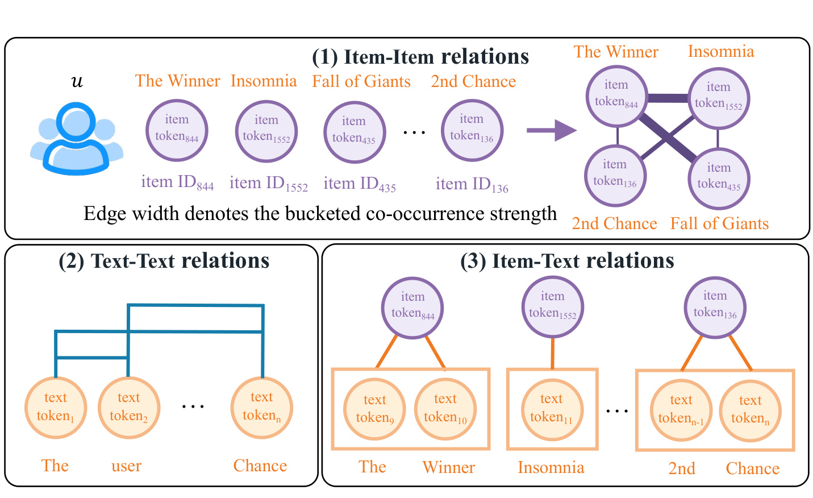
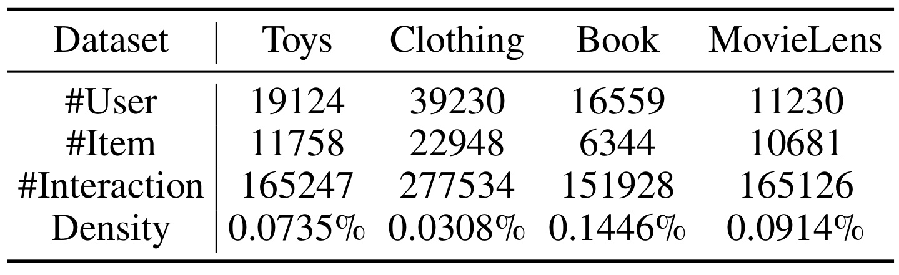
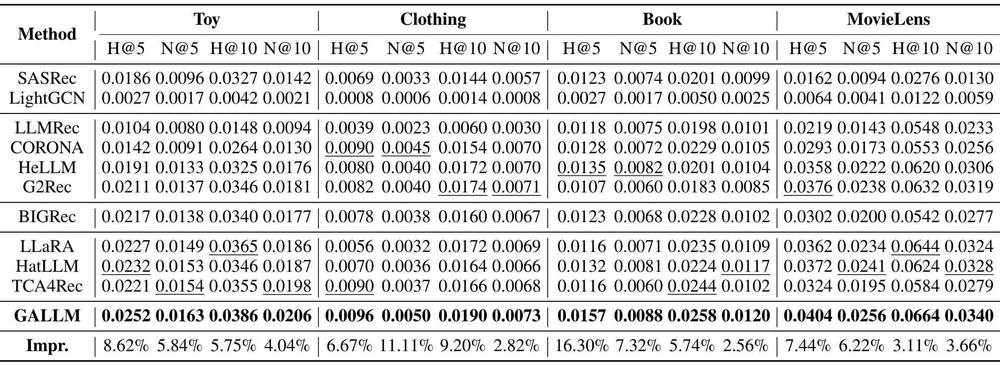
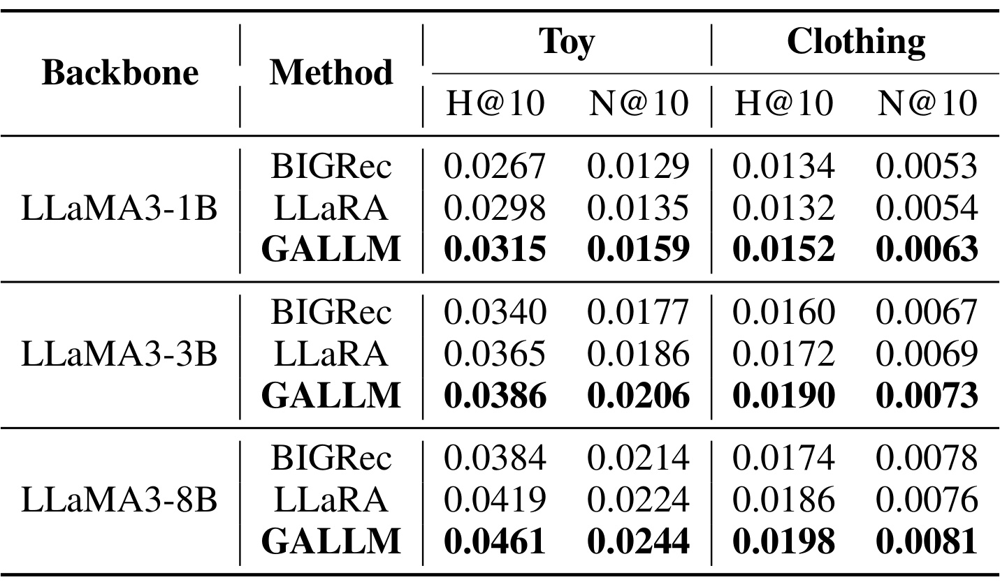
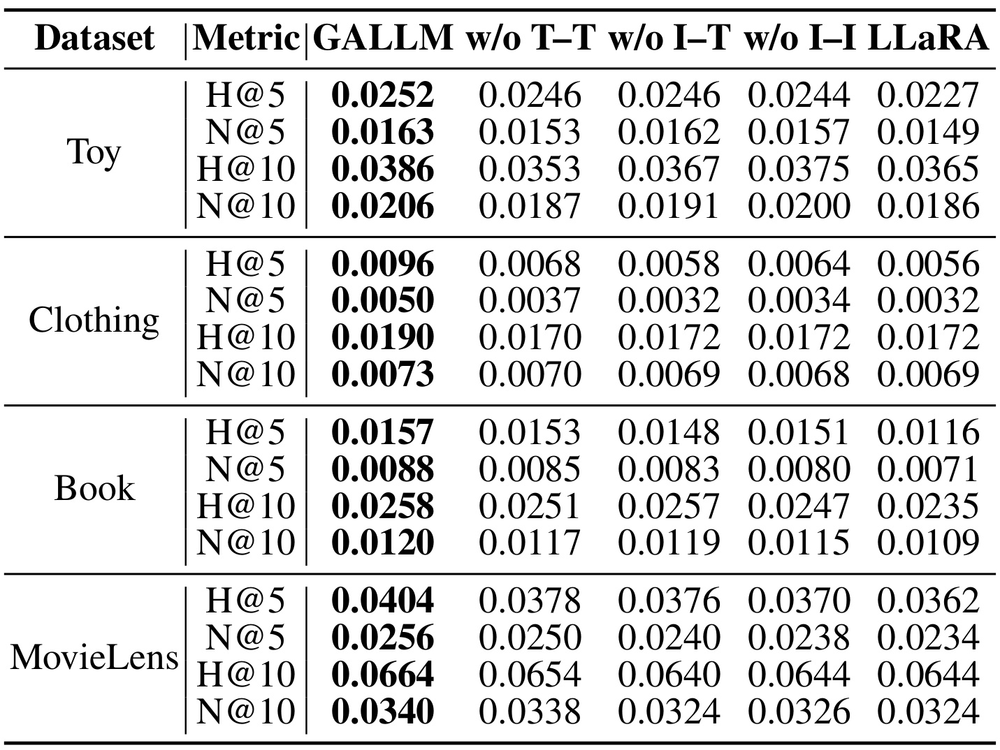
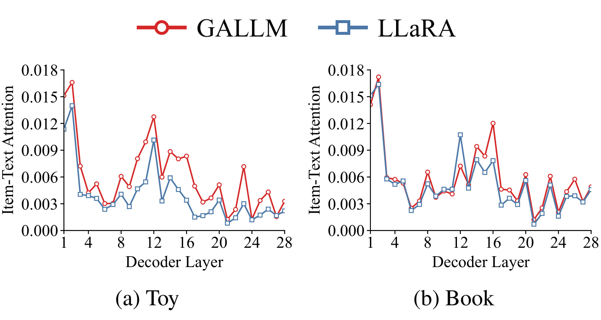
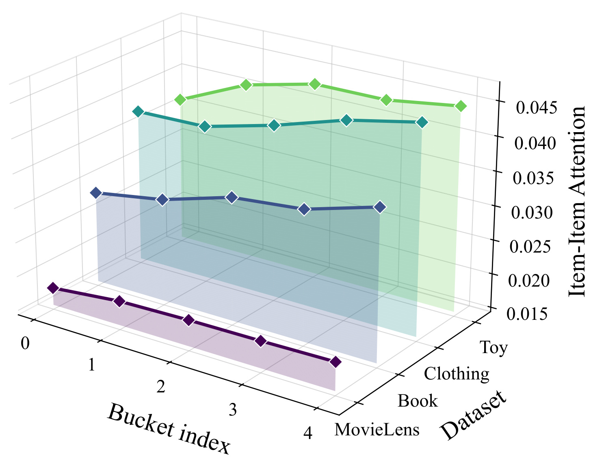

GALLM：把全局协同图写进大模型注意力
《Making Collaborative Signals Count: Graph-Aware Large Language Models for Sequential Recommendation》由浙江大学 Fenglin Yan、Bohao Wang 等人与中国科学技术大学合作者完成，于 2026 年 8 月 12 日提交 arXiv。论文讨论一个很具体的 LLM4Rec 矛盾：语言模型能理解物品标题，却不天然拥有用户行为形成的全局协同结构。作者提出 GALLM，不另接图编码器，而是把 Text–Text、Item–Text、Item–Item 三类边转成逐层注意力偏置。论文入口为 arXiv:2608.12184；截至本次核验，arXiv 页面与 PDF 首页均未提供可独立验证的代码或项目仓库。
语言中心的预训练让 LLM 擅长词元语义，却难以直接吸收用户—物品交互中隐含的全局协同信号；现有外部推荐器注入受制于外部模型和表示空间错配，而序列内注意力改造又看不到跨用户、跨序列的共现结构。
1. 背景和问题
序列推荐希望根据用户按时间排列的历史物品，预测下一次交互。传统方法里，SASRec 一类模型擅长在单条序列中找近期兴趣和顺序依赖，LightGCN 一类图模型则从全体用户—物品交互传播协同信号。两者分别回答“这个用户刚刚经历了什么”和“哪些物品在全局行为上经常被同一群用户共同选择”。LLM 进入推荐系统后，物品可以写成标题等自然语言，用户序列也能组织成 prompt，于是语义理解、开放词表和生成能力被引入；但预训练 attention 主要学习 token 之间的语言关系，并不会自动把“两个物品在许多用户历史里共同出现”视为强关系。这是语义依赖与行为依赖的层级错配，不只是换一个更大的语言模型就会消失。
已有 CF-enhanced LLM 大体有两条路线。第一条先让 SASRec 等外部推荐器生成协同表示，再把表示、预测分布或参数增量送进 LLM。它的问题有两层：外部模型能抽出什么，决定了注入信号的上限；协同向量与文本 token 不在同一预训练空间，送到输入端也不保证后续层真正使用。第二条在 LLM 内修改 attention mask，让同一物品的文本、不同历史物品或不同层承担不同关系。它绕过了输入空间对齐，却仍主要观察当前用户的一条序列，无法直接利用其他用户历史里累积的全局共现。GALLM 的研究问题因此不是泛泛的“如何用图增强 LLM”，而是：能否把训练集中的全局协同图直接变成 LLM 每一层都能读取的结构先验，同时保留原来的语言建模通道？

Figure 1 是论文为“浅层注入未必被使用”提供的直接诊断。左侧 LLaRA 中，四个数据集的 Text token 归因分数分别为 5.14、4.23、8.77、4.87，而 CF token 只有 0.05、0.03、0.04、0.01；右侧 HeLLM 的文本分数为 2.65、3.58、3.24、1.98，CF token 为 0.00、0.09、0.48、0.21。量级差距说明，即使模型输入里已经出现协同表示，最终生成仍可能主要依赖语言 token。这里应注意归因分数反映的是特定归因方法下的影响量，不等同于严格因果效应，也不能证明所有外部注入都会失败；但它足以支持论文更克制的主张：“把协同向量放进去”与“让多层注意力持续读取协同关系”不是同一件事。
从这个诊断出发，GALLM 选择把关系而非完整图表示注入 attention。每条输入仍由文本 token 与专用 Item token 组成，图只告诉模型哪些 token 对属于哪种关系、两个 Item token 的共现强度落在哪一档。这样做的关键取舍是：作者没有再训练一个 GNN 后把输出塞给 LLM，而是让原有 Transformer 层兼任图上的信息聚合器。三类边分别承担不同责任：Text–Text 保住预训练语义，Item–Text 把物品身份与描述对齐，Item–Item 引入跨用户历史统计出的协同依赖。后续实验真正需要检验的也正是三件事：离线推荐指标是否改善、三类边是否缺一不可、注意力是否按预期转向对应关系。
这里还要区分“全局协同”与“把当前序列做成全连接图”。如果只让同一用户历史里的 Item token 彼此注意，模型看到的仍是单条序列中已经共同出现的物品，无法知道这对物品是否也反复出现在许多其他用户历史里。GALLM 先在训练集的全部序列上统计共现，再把统计强度带回每个样本，因此同样一对当前历史物品会携带跨用户证据。
因此，论文的创新点不是发现协同过滤有用，也不是证明图模型普遍胜过语言模型，而是提出一个结构接口：把推荐图里的离散关系映射为原生 attention logit 的附加项。这个接口是否成立，需要同时满足三道证据门槛。第一，结果应优于只做外部协同注入与只做序列内关系建模的强基线；第二，删掉任一关系类型都应造成可解释退化；第三，内部注意力应真的响应 Item–Text 对齐和 Item–Item 强度，而不是新增参数恰好带来正则化收益。后文按这三道门槛阅读实验，能避免只看“平均提升 9.76%”就接受全部机制叙事。
2. 方法
2.1 混合提示：让语义 token 与物品 token 同处一条序列
GALLM 的总体数据流可以分成“构造混合 prompt—把 prompt 解释成图—把图关系写进注意力”三步。给定用户历史，系统先把每个物品标题等文本分成 Text tokens，并在该文本组后追加一个专用 Item token。前者携带语言可读的内容，后者携带物品身份和协同先验。论文沿用 LLaRA 的初始化方式：先由 SASRec 得到物品表示，再经两层 MLP 映射到 LLM hidden space，作为 Item token embedding。这个初始化仍借助外部推荐器，但它只提供起点；GALLM 的核心区别是，后续每层都会显式加入关系偏置，而不是只期待一个输入向量自行穿过整个语言模型。

Figure 2 从左到右画出完整链路。左侧把用户读过的书及专用 Item token 写进自然语言提示；中间得到“文本片段—Item token—文本片段—Item token”的交错序列；右侧同一批 token 被映射成协同图，再把关系类型编码到 Graph-Aware Attention Injection 矩阵。图中上方推荐结果仍由 LLM 生成，意味着模型没有被替换为图排序器。训练时，这条链路用标准 causal language modeling loss 微调；推理时，论文用 beam size 10 的 trie-constrained beam search，把生成限制在有效物品集合。图结构既进入训练，也保留在推理注意力中；外部 GNN 不存在，但共现关系查询和 Item token 构造仍是服务链路的一部分。
原文用下面的拼接式定义混合提示。它不是为了让输入看起来更像自然语言，而是把每个物品的语义描述与协同身份固定成相邻单元，使后续图关系可以由 token 类型和所属物品确定。若缺少专用 Item token，同名、近义或描述过短的物品就没有稳定的协同锚点；若缺少 Text tokens，模型又退化成只读匿名 ID 的序列模型：
符号解释：$x$ 是送入 LLM 的完整 token 序列；$x_{\mathrm{ins}}^T$ 是任务指令的 Text tokens；$x_k^T$ 是第 $k$ 个历史物品的文本 token 组；$x_k^I$ 是同一物品的专用 Item token；$L$ 是历史序列长度。分号强调指令与物品组的分段，逗号表示同一物品的文本和身份 token 紧邻。这个排列让 Item–Text 对齐可以由固定关系定义，而无需在线做模糊语义匹配。
2.2 协同图构造：Text–Text、Item–Text 与 Item–Item 三类关系
图的节点就是混合提示中的 token，不额外创建用户节点。这样既避免把用户实体额外塞入语言序列，也意味着个性化只通过当前历史和全局物品关系表达，而没有独立的长期 user embedding。Item–Item 边的原始强度来自所有训练用户历史中的共现次数；同一用户无论在序列中出现一次还是多次，都只通过示性函数为该物品对贡献一次：
符号解释：$mathcal{U}$ 是用户集合，$S_u$ 是用户 $u$ 的交互序列，$mathbb{I}(\cdot)$ 是条件成立取 1、否则取 0 的示性函数，$C(i,j)$ 统计物品 $i$ 与 $j$ 同时出现在多少个用户历史中。它不编码先后顺序，也不按用户活跃度归一化；它提供的是全局“共同被看见”强度，而非因果转移概率。
原始共现频次稀疏且长尾，作者没有把连续值直接加到 attention，而是使用等频分桶。这个变换把“出现 2 次”和“出现 2000 次”压到有限类别，降低极端热门物品对数值尺度的支配，也让每个类别只需学习一个标量偏置；代价是桶边界成为数据依赖的超参数：
符号解释：$i_k$、$i_{k'}$ 是当前历史中第 $k$ 与第 $k'$ 个物品，$r_{kk'}$ 是二者的离散关系类别，$\mathcal{R}$ 是关系桶集合。实验把关系分成 ${0,1,2,3,4}$ 五档，索引越大代表共现越强。等频分桶能避免极热门物品的巨大计数支配梯度，但也会丢掉桶内细粒度差异，并使训练分布变化时的桶边界需要重估。
三类边随后分别写成三个可查询的集合。形式上它们都只是 token 对，但语义和参数不共享：Item–Item 还携带关系桶，Text–Text 不区分具体词对，Item–Text 只认物品归属。分开定义的价值在于模型可以在同一 attention 矩阵中对三种信息流施加不同先验，也可以通过消融逐类检查：
符号解释：$E_{II}$ 是 Item–Item 边集合，每条边连接两个历史 Item token，并携带共现桶 $r_{kk'}$；它把其他用户序列累积出的全局行为依赖带进当前 prompt。集合枚举当前长度 $L$ 内的物品对，真正进入自回归 attention 时仍受 causal mask 限制，因此“存在图边”与“当前位置可读取该边的另一端”要分别判断。
符号解释：$V_T$ 是指令和物品描述里的全部 Text token 节点，$E_{TT}$ 表示文本之间原有的语义交互。它的作用不是新增外部知识，而是避免图改造破坏 LLM 已学到的语言依赖。所有 Text–Text 对共享同类偏置，并不显式区分句法、位置或跨物品语义；这些细节仍由原有 query/key 内容项和位置编码承担。
符号解释：$x_{k,j}^T$ 是第 $k$ 个物品描述的第 $j$ 个 Text token，$m_k$ 是该描述长度，$E_{IT}$ 把专用 Item token 与属于同一物品的全部文本 token 相连。它是身份空间与语言空间的显式桥梁，而不是跨物品语义相似边。

Figure 3 把三个集合落到同一个读书历史例子中。上半部分的 Item–Item 子图把 The Winner、Insomnia、Fall of Giants、2nd Chance 的 Item token 相连，边宽表示离散后的共现强度；左下 Text–Text 子图保留句子内部 token 的语义连接；右下 Item–Text 子图只把 Item token 接到自身标题 token，例如 Insomnia 的身份节点不会直接连到 2nd Chance 的文字。三类关系不是可互换的“更多边”：$E_{TT}$ 保语言，$E_{IT}$ 做跨表示对齐，$E_{II}$ 才负责全局协同。这个职责划分也为消融提供了可证伪预测——删掉某一类边，应在对应能力上出现退化。
2.3 图感知注意力：把离散关系变成逐层可学习偏置
完成关系标注后，GALLM 不对图单独做 message passing，而是修改每个 Transformer 层的 pre-softmax attention logit。标准点积项仍回答“两个当前表示是否相似”，新增偏置回答“它们在推荐图中属于什么结构关系”。两项在 softmax 前相加，意味着关系先验能够改变 token 之间的竞争概率，却不会替代内容表示本身：
符号解释：$h_i^l$、$h_j^l$ 是第 $l$ 层中第 $i$、$j$ 个 token 的 hidden states；$W_Q^l$、$W_K^l$ 是 query/key 投影；$d$ 是投影维度；第一项仍是标准内容相似度；$\phi(x_i,x_j)$ 返回 token 对的图关系；$b^l$ 是该层可学习的标量偏置。原始 causal mask 保留，偏置只作用于因果上可见的位置，因此图边不会让自回归模型偷看未来 token。
不同关系如何选取偏置由分段式给出。实现时可先根据 token 类型和物品归属构造 relation-id 矩阵，再按层查表得到 bias；Item–Item 的 relation id 还包含五档共现强度。没有定义边的位置返回零，但原始注意力内容项仍可存在，因此该图是“加性结构先验”，不是把未连边 token 强制屏蔽的硬邻接矩阵：
符号解释：$b_{TT}^l$ 对应 Text–Text，$b_{IT}^l$ 对应 Item–Text，$b_{II,R}^l$ 对应第 $R$ 档 Item–Item 强度；不存在定义关系时不加结构偏置。因为实验使用五个 Item–Item 桶，所以注意力结构部分每层只需区分一个 $TT$、一个 $IT$ 和五个 $II$ 标量类别。核心机制不是让图向量替换 token 表示，而是在每一次注意力竞争发生之前，持续改变“哪些 token 对更值得相互读取”的先验。
多层堆叠后，每层都根据内容兼容性与关系偏置重新聚合，因而整个 LLM 可以被理解为带隐式多层图聚合的语言模型。相比外接 GNN，这减少了结构模块和跨空间融合；相比固定 mask，偏置大小可训练，还能区分五档协同强度。但“轻量”主要指新增关系参数很少，并不意味着整体训练便宜：论文仍微调 3B LLaMA、维护 Item token/MLP，并在四张 RTX 5090 上训练。线上还需根据历史物品对查询共现桶，长历史的成对关系构造可能成为未量化的延迟与存储成本。
3. 实验结果
3.1 数据、评估口径与实现
论文使用 Amazon Toys and Games、Amazon Clothing、Amazon Books 与 MovieLens-10M。Toys 和 Clothing 先做 5-core 过滤；Book 与 MovieLens 因规模较大，先随机保留 100,000 个物品及相关交互再预处理。长度超过 11 的用户序列通过长度 11 的滑动窗口切分，随后按时间升序以 8:1:1 切为训练、验证和测试，确保测试交互晚于训练。Item–Item 共现只从训练切分计算，避免把验证/测试行为泄漏进图。

Table 1 显示四个处理后数据集都很稀疏。Toys 有 19,124 个用户、11,758 个物品、165,247 次交互，密度 0.0735%；Clothing 有 39,230 个用户、22,948 个物品、277,534 次交互，密度最低，仅 0.0308%；Book 有 16,559 个用户、6,344 个物品、151,928 次交互，密度最高但也只有 0.1446%；MovieLens 有 11,230 个用户、10,681 个物品、165,126 次交互，密度 0.0914%。这些量级解释了后面 HR 的绝对值为何看起来很低：评估不是在少量负样本中挑选，而是在完整物品空间做检索或排序。
指标为 HR@5/10 与 NDCG@5/10，不使用负采样。基线包括传统 SASRec、LightGCN；直接以 LLM 为 backbone 的 BIGRec；图增强的 LLMRec、CORONA、HeLLM、G2Rec；以及 CF-enhanced 的 LLaRA、HatLLM、TCA4Rec。所有 LLM 方法统一采用 LLaMA-3.2-3B。GALLM 用 LoRA 微调，rank 8、$\alpha=16$、dropout 0.05，Adam 学习率 0.001、batch size 64、训练 5 个 epoch；每个 epoch 后按验证集 NDCG@5 选 checkpoint。实验独立重复三次并报告均值，但论文没有给标准差或置信区间。
3.2 主结果与 backbone 规模

Table 2 是主要证据：GALLM 在四个数据集、四个指标构成的 16 个单元格中均为最优。以 HR@5 为例，Toys 从最强基线 0.0232 提到 0.0252，相对 +8.62%；Clothing 从 0.0090 到 0.0096，+6.67%；Book 从 0.0135 到 0.0157，+16.30%；MovieLens 从 0.0376 到 0.0404，+7.44%，四数据集平均相对提升 9.76%。NDCG@5 的对应增幅为 5.84%、11.11%、7.32%、6.22%，论文在引言汇总为平均 7.62%。改进幅度并非所有格子都很大，例如 Book NDCG@10 仅 +2.56%、MovieLens HR@10 仅 +3.11%；因此更准确的结论是“跨数据集稳定占优”，而不是每项都有大幅跃升。
对基线的结构化比较也值得注意。LightGCN 在本设置下明显弱于 SASRec，说明纯图协同不等于能处理当前序列生成任务；BIGRec 具备文本语义但没有显式 CF；LLaRA/TCA4Rec 注入协同信号却面临空间对齐；HatLLM 强调序列内关系但缺少跨序列共现。GALLM 同时保留 Text–Text、绑定 Item–Text、加入全局 Item–Item，因而结果与方法假设方向一致。不过所有 LLM 基线实现都基于公开代码和作者推荐设置，论文没有展示逐方法的超参数搜索预算，是否做到完全等预算仍需代码才能审计。

Table 3 只在 Toys 与 Clothing 比较 BIGRec、LLaRA、GALLM，但覆盖 1B、3B、8B 三种规模。Toys H@10 上，GALLM 从 1B 的 0.0315、3B 的 0.0386 提升到 8B 的 0.0461，并在每个规模都高于 LLaRA 的 0.0298、0.0365、0.0419；Clothing H@10 对应为 0.0152、0.0190、0.0198，也始终超过 LLaRA。值得区分“方法可跨规模工作”和“规模越大收益越大”：Toys 随规模增长很清楚，Clothing 从 3B 到 8B 的绝对增量仅 0.0008，且 NDCG@10 从 0.0073 到 0.0081。该表支持机制不依赖单一 3B backbone，却不足以推出统一 scaling law。
3.3 三类关系的消融

Table 4 逐一删除三类边。Toys HR@5 从完整模型 0.0252 降到 w/o T–T 的 0.0246、w/o I–T 的 0.0246、w/o I–I 的 0.0244，Item–Item 在该格影响最大；Clothing HR@5 从 0.0096 降到 0.0068、0.0058、0.0064，Item–Text 缺失最严重；Book 从 0.0157 降到 0.0153、0.0148、0.0151；MovieLens 从 0.0404 降到 0.0378、0.0376、0.0370，Item–Item 缺失最严重。不同数据集的主导边并不相同，这恰好符合三类边职责互补而非一个统一正则项的设计。所有变体仍普遍优于 LLaRA，但表中没有同时删除两类边、随机关系或等参数无图偏置对照，因而不能完全排除“更多可训练偏置”本身带来的部分收益。
从 NDCG 看，Toys 去掉 T–T 后 N@5 从 0.0163 降到 0.0153，比去掉 I–T 的 0.0162 更敏感；MovieLens 去掉 I–I 后 N@5 从 0.0256 降到 0.0238。也就是说，关系的重要性既受数据域影响，也受“能否命中”与“前五位次序是否正确”影响。 这提醒工程复现不应直接把五档共现和三类偏置当成固定配方，至少要按域检查每类边的边际贡献，并关注过强结构偏置是否压制文本语义。
3.4 注意力机制诊断

Figure 4 比较 GALLM 与 LLaRA 在 28 个 decoder layer 上的 Item–Text attention。论文汇总称，Toy 的平均值由 0.0039 增至 0.0060，相对 +54.2%；Book 从 0.0053 增至 0.0059，+10.0%。逐层曲线并非处处高于：浅层和个别中后层有交叉，Toy 的提升也集中在少数峰值层。这说明关系偏置确实改变了物品身份 token 与对应文本之间的信息流，但“均值提高”不能简化成所有层都统一完成对齐。更有力的后续证据应把某层偏置、注意力变化与最终推荐误差连接起来，例如按层冻结或干预 $b_{IT}^l$，而不仅是比较观测到的 attention weight。特别是 Book 只有 10.0% 的均值增幅，却仍取得主结果提升，提示最终效果可能来自 Item–Text 与 Item–Item 的联合作用，而不是单一注意力统计量。

Figure 5 把横轴设为共现 bucket index，纵向区分四个数据集，高度表示 Item–Item attention。作者将其解释为共现越强、平均注意力越高，意在证明 $b_{II,R}$ 学到了与协同强度一致的排序。图上多数序列呈总体抬升或高桶占优，但并非每相邻两档都严格单调，部分曲线存在平台或回落；论文又没有附逐桶数值、方差和样本量，所以这里更适合说“整体趋势与设计相符”，不能说每个数据集都建立了严格单调映射。结合 Table 4，机制证据形成两层链条：删除 I–I 会降指标，保留 I–I 时 attention 会随关系档位发生系统变化；但 attention 仍是中间量，尚不是协同边导致性能提升的完整因果证明。
4. 总结
4.1 我的判断与迁移价值
GALLM 最有价值的地方不是“图 + LLM”这个宽泛组合，而是把结构先验压缩成可学习的 attention bias。它避开了外部图编码器输出与语言空间二次对齐，同时又没有退回只看当前序列的局部 mask。主结果、关系消融与 attention 诊断彼此对应：16 个主结果单元格全部最优，三类边删除后均有退化，Item–Text 与 Item–Item 的内部注意力也按预期改变。证据足以支持“关系级注入是一条有效的离线序列推荐路线”，但还不足以支持线上收益、低成本或普遍适用于任意交互图。
对推荐系统工程，最直接的迁移不是把整个排序器改成生成模型，而是在已有 Transformer 排序/重排网络中试验分类型关系偏置：内容 token 保留语义通道，item/entity token 与内容显式绑定，再把共现、同购、同看或图距离分桶作为 logit prior。对个性化 LLM、RAG 或 Agent memory，也可以把“同一实体的文本—身份关系”和“实体间行为关系”拆开编码，避免所有外部记忆都变成难以对齐的向量前缀。真正需要保留的原则是关系职责与可消融性，而不是照搬五个桶或 SASRec 初始化。
4.2 局限、风险与后续跟进
第一，四个公开数据集都是离线下一物品预测，且 Book/MovieLens 经过随机保留物品、所有序列又被长度 11 的滑窗处理，结论不能直接外推到超长历史、实时兴趣漂移或线上多目标排序。第二，$C(i,j)$ 只统计是否共同出现在用户历史中，不含方向、时间衰减、曝光校正与用户活跃度归一化；热门物品可能制造伪协同，等频分桶也会随数据漂移。第三，论文报告三次实验均值却没有方差，Table 3 只覆盖两个数据集，attention 曲线又缺逐桶数值与干预实验，稳定性和机制因果性仍有限。第四，未核验到代码，论文也未报告关系构图耗时、显存、吞吐、延迟、参数增量或与基线的总训练成本；“无外部 GNN”不能直接等价为“线上便宜”。第五，实验没有单独分析冷启动物品、长尾用户、流行度偏置、公平性或共现图被异常行为污染后的鲁棒性。
后续至少应做四项验证。其一，按论文的 8:1:1 时间切分、全物品评估和训练集共现规则复现三次以上，并报告置信区间，先确认 9.76% 平均 HR@5 提升不是预处理差异。其二，加入随机关系、打乱桶序、连续共现值、PMI/归一化共现和带时间衰减的对照，判断收益究竟来自图结构、离散强度还是新增偏置参数。其三，对 $b_{TT}^l$、$b_{IT}^l$、$b_{II,R}^l$ 做逐层冻结、归零和因果干预，把 Figure 4/5 的 attention 变化与命中错误关联。其四，在真实服务约束下测量历史长度增长时的构图复杂度、KV cache、吞吐和 P99 延迟，并用增量更新验证共现桶在目录变化与兴趣漂移下是否可维护。只有这些证据补齐后，GALLM 才能从结构清晰的离线方法进一步走向可部署的图感知个性化 LLM。